Bölüm 6 İstatistiksel Kavramlar
İstatistik verinin toplanmasını, düzenlenmesini, analiz edilmesini ve yorumlanmasını sağlayan bir disiplindir. İstatistik betimsel (tanımlayıcı (descriptive)) ve çıkarımsal (tümevarımsal (inferential)) amaçlı istatistik olmak üzere ikiye ayrılır.
Betimsel istatistik: Verilerin tablolar, grafikler veya özet istatistikler aracılığıyla betimlenmesi ve özetlenmesi ile ilgilidir. Bu sayede büyük veri kümeleri tek bir tablo, grafik veya özet istatistik ile temsil edilmekte ve herkes tarafından kolay anlaşılabilir bir biçimde sunulmaktadır.
Çıkarımsal istatistik: Kitleden rasgele seçilen örneklemden toplanan verileri kullanarak kitlenin parametrelerini tahmin etmeyi ve parametrelerle ilgili savların doğruluğunun araştırılmasını amaçlar. Çıkarımsal istatistikte örnekten elde edilen bilgilere dayanarak kitle hakkında kestirimlerde bulunmak, sonuçlar çıkarmak ve kararlar vermek istatistiğin önemli bir bölümünü oluşturur.
6.1 Verilerin Toplanması ve Sunulması

Veri; analiz, karar ve faaliyet için temeldir bu nedenle tüm veriler özellikle işlem ve üretim noktalarında kayıt edilmelidir. Sistematik ve doğru kayıt bu bakımdan oldukça önemlidir. Verinin yapısı prosesten prosese farklılık gösterebilir. Maliyet ve emek kaybının önlenmesi için yalnızca ihtiyaç duyulan veriler kayıt altına alınmalıdır.
Verilerin istenilen hassasiyette ve doğru elde edilebilmesi için ölçü aletlerinin uygunluğu ve güvenilirliği sağlanmalıdır, ancak bu şekilde tekrarlanabilirlik mümkün olacaktır.
Kalite hakkında bilgi sayarak veya ölçerek elde edilebilir. Bu bakımdan veri tipleri niceliksel (variables) ve niteliksel (attributes) olarak ikiye ayrılmaktadır.
Niteliksel veri (attributes): Sayarak elde edilen veri tipi belirli aralıklarla ortaya çıkmaktadır. Ör: 10 adetlik bir örnek gruptaki hatalar 0, 1, 2 gibi olabilir. Belirli uzunluktaki bir kumaştaki hataların sayısı, bir sayfadaki yazım hatalarının sayısı niteliksel veri tipine örnek olarak verilebilir.
Niceliksel veri (variables): Ölçerek elde edilen veri tipleri sürekli yapıdadırlar. Örn: sıcaklık, ağırlık, hacim, zaman vb.
Veri toplanırken bazı noktalara dikkat edilmesi gerekir.
- Amaca uygun hassasiyette veri toplanması gerekir.
- Verinin hassasiyeti ölçü aleti hassasiyetini aşamaz. Ör: 0.0001g hassasiyetle yapılması gereken tartım için 0.001g hassasiyete sahip terazi kullanılamaz.
- Gözlem sayısı, örnekleme yöntemi ve analiz için kullanılan yöntem araştırılan konuya uygun olarak belirlenmelidir.
- Veri toplanırken gerekli tüm koşullar saptanmalı ve kaydedilmelidir. (İlgili vardiya, üretimi yapan kişi, kullanılan cihaz, hammadde, çevre koşulları vb.)
Veri toplama işlemi otomatik veya manuel olarak yapılabilir. Çalışılan duruma bağlı olarak her iki yöntemin de avantajlı olduğu durumlar mevcuttur.
Manuel sistem;
- Veri toplayan kişi prosese daha yakındır ve daha iyi anlamaya çalışır.
- Veri toplayan kişi proses üzerinde tecrübe sahibi oldukça neden-sonuç ilişkisi kuracak ve yorumlayabilecektir.
- Veri toplanması daha dinamik hale gelecek, gerekli ve gereksiz parametreler açığa çıkacaktır.
- Geçici faaliyetler için manuel sistemlerin kullanımı hem pratik hem de ucuzdur.
Otomatik sistem;
- Değişimin çok hızlı olduğu durumlarda kullanışlıdır.
- Çok sayıda veri aynı anda toplanabilir.
- Sağlık ve emniyet açısından manuel veri toplamanın riskli olduğu durumlarda kullanılabilir.
- Veri toplama ve analiz aşamasının hızlı olması gerektiğinde kullanışlıdır.
- Fazla miktarda veri toplanması bakımından avantajlıdır.
6.2 Değişkenliğin Tanımlanması
6.2.1 Dal-Yaprak Grafiği
Bir proses tarafından üretilen iki ürün birimi aynı değildir. Bazı değişiklikler kaçınılmaz olarak ortaya çıkmaktadır. Örnek olarak, bir içecek şişesinin net içeriği, şişeden şişeye biraz değişir ve bir güç kaynağının çıkış voltajı, bir üniteden diğerine tam olarak aynı değildir. İstatistik, verilerdeki bu değişkenlikleri hesaba katarak analiz etme ve sonuç çıkarmada faydalandığımız bilimdir.
Verilerin sunulması için kullanılan başarılı görsellerden biri de dal-yaprak (steam and leaf) grafiğidir.
Çalışan Sağlık Sigortası Taleplerinin Ödenmesi İçin Gün Olarak Döngü Süresi

##
## The decimal point is 1 digit(s) to the right of the |
##
## 1 | 677
## 2 | 22234
## 2 | 66778
## 3 | 00012334
## 3 | 555666677
## 4 | 1233
## 4 | 56678
## 5 |
## 5 | 6Dal-yaprak grafiği verinin yayılım ve merkezi eğilimi hakkında fikir sahibi olmamızı sağlamaktadır. Bu bakımdan oldukça faydalı olmakla birlikte gözlemlerin zaman sırasını hesaba katmaz. Zaman, genellikle kalite iyileştirme problemlerindeki değişkenliğin yorumlanmasına katkıda bulunan önemli bir faktördür. Zamanı dikkate alan grafikler üretmek ve yorumlamak da mümkündür.
6.2.2 Frekans Dağılımı
Kitle (popülasyon) çok sayıda birimden oluşuyorsa, bu birimleri sınıflandırmak kitlenin çeşitli özelliklerinin belirlenmesini kolaylaştıracaktır. Sınıflandırmanın en doğru yolu frekans tablosudur. Bu yapıda gözlenen veri sınıflara ayrılır, sonuçlanan tablo her bir sınıftaki gözlem sayısını vermektedir.
SPC açısından prosesteki değişkenleri açıkça görebilmek ve prosesin geçerliliği hakkında bir yargıya varabilmek için örneklerden elde edilen verilerin büyüklüklerine göre gruplandırılması gerekmektedir.
Frekans tablosu oluşturulurken dikkat edilmesi gereken noktalar aşağıda yer almaktadır.
- Sınıflar ayrık olmalıdır.
| Yanlış | Doğru | |
|---|---|---|
| 4.00 - 4.50 | 4.00 - 4.49 | |
| 4.50 - 5.00 | 4.50 - 4.99 |
- Sınıflar veri kümesinde yer alan her değeri içine almalıdır.
- Sınıf limitleri ve sınıf sayısı hiç bir sınıf boş kalmayacak şekilde seçilmelidir.
Frekans tablosu hazırlanması;
Konu ile ilgili veriler mümkün olduğunca duyarlı , aynı ölçü birimi ile ve duyarlılığı aynı rakamlarla tespit edilir.
En büyük ve en küçük değerler arası fark, yani değişim genişliği (range) bulunur. Değişim genişliği belirlenen sınıf sayısına bölünerek sınıf aralığı tespit edilir. Burada önemli nokta sınıf sayısının kaç olduğuna karar vermektir. Bu karar verinin miktarına ve cinsine bağlı olarak uzman tarafından verilmekle birlikte genellikle 5-20 arasında seçilmektedir. Sınıf sayısının belirlenmesinde sıklıkla kullanılan bir yöntem de Sturgess Kuralı’dır.
\(K=1+3.3log_{10}N\)
burada K sınıf sayısı, ve N toplam veri adedidir.
## [1] 9.586798Örnek: Bir ipek ipliğine ait mukavemet değerleri için frekans tablosu oluşturunuz.
muk<-c(83,63,81,76,54,87,84,86,84,60,71,90,92,78,92,84,53,68,80,83,84,71,65,81,94,73,95,82,81,71,76,92,69,61,102,84,67,68,108,88,82,67,78,89,80,97,103,86,64,97,99,89,76,68,65,94,75,95,103,74,103,94,103,83,88,64,67,81,91,97,84,70,105,99,76,72,96,63,84,82,78,89,80,92,106,73,71,70,94,76,71,75,91,81,70,78,56,73,68,82,88,78,81,71,73,81,94,90,61,71,64,54,93,86,87,81,71,65,90,74)
N=length(muk); N #gozlem sayisi## [1] 120En büyük gözlem
## [1] 108En küçük gözlem
## [1] 53Değişim genişliği (range)
## [1] 55Sınıf sayısı
## [1] 7.861298## [1] 8Sınıf aralığı
## [1] 6.875Ödev: Aşağıda yer alan mukavemet verisi için frekans tablosunu elde eden kodu yazınız.
factorx <- factor(cut(muk, breaks=nclass.Sturges(muk)))
#Tabulate and turn into data.frame
xout <- as.data.frame(table(factorx))
#Add cumFreq and proportions
xout <- transform(xout, cumFreq = cumsum(Freq), relative = prop.table(Freq));xout## factorx Freq cumFreq relative
## 1 (52.9,59.9] 4 4 0.03333333
## 2 (59.9,66.8] 11 15 0.09166667
## 3 (66.8,73.6] 24 39 0.20000000
## 4 (73.6,80.5] 17 56 0.14166667
## 5 (80.5,87.4] 27 83 0.22500000
## 6 (87.4,94.2] 21 104 0.17500000
## 7 (94.2,101] 8 112 0.06666667
## 8 (101,108] 8 120 0.066666676.2.3 Histogram
Histogram verinin yayılımını göstermektedir ve SPC’ün temeli verideki değişkenliği tanımlamaktır. Histogramın kullanım amaçları şu şekilde sıralanabilir;
- Problemleri çözmek
- Proses yeterliliğini analiz etmek
- Spesifikasyonlar ve gerçekleşen veriyi karşılaştırmak
- Popülasyonun şekli hakkında fikir edinmek
- Veri farklılıkları ve boşlukları ortaya koymak
Mukavemet örneği histogramı;
## factorx Freq cumFreq relative
## 1 (52.9,59.9] 4 4 0.03333333
## 2 (59.9,66.8] 11 15 0.09166667
## 3 (66.8,73.6] 24 39 0.20000000
## 4 (73.6,80.5] 17 56 0.14166667
## 5 (80.5,87.4] 27 83 0.22500000
## 6 (87.4,94.2] 21 104 0.17500000
## 7 (94.2,101] 8 112 0.06666667
## 8 (101,108] 8 120 0.066666676.2.4 Merkezi Eğilim Ölçüleri
Frekans dağılımının simetrik, sağa veya sola çarpık olma durumu merkezi eğilim ölçüleri yardımıyla belirlenir. Merkezi eğilim ölçüsü olarak üç ölçü sıklıkla kullanılır, bunlar;
- Ortalama (mean)
- Medyan (ortanca (median))
- Mod (tepedeğer (mode))
Ortalama: \(x_{1},x_{2},...,x_{n}\) örneklemde yer alan gözlemler olmak üzere;
eşitliği, en önemli merkezi eğilim ölçüsü olan ortalamayı elde etmemizi sağlar. Gözlem değerlerinde meydana gelen çok küçük değişmeler aritmetik ortalamayı etkiler, bu nedenle aykırı değer durumunda kullanımına dikkat edilmelidir. Bir veride yalnızca bir aritmetik ortalama vardır. Nicel verilere uygulanabilir.
Medyan: Gözlem değerleri en küçükten en büyüğe sıralandığında tam ortaya düşen gözlem medyan (ortanca)’dır.Gruplanmamış verilerde gözlem sayısı tek ise medyan tam ortadaki gözlemdir ancak gözlem sayısı çift ise tam ortaya denk gelen iki gözlemin aritmetik ortalamasıdır.
Medyan aykırı değerlerden etkilenmez, bu bakımdan aritmetik ortalamadan üstündür. Ancak aritmetik ortalamanın daha hassas olduğu unutulmamalıdır. Bir veride yalnızca bir medyan vardır. Nicel verilere uygulanabilir.
Mod: Veriler arasında en çok tekrar eden gözleme mod (tepedeğer) denir. Hassaslığı en az olan ölçüdür ancak hesaplanması kolaydır. Hem nitel hem de nicel veriler için kullanılabilir.
Bir frekans dağılımı için ortalama, medyan ve mod değerleri birbirine eşit ise dağılım simetriktir (symmetrical). Mod \(<\) Medyan \(<\) Ortalama şeklinde sıralama söz konusu ise dağılım sağa çarpık (positive skewness), Ortalama \(<\) Medyan \(<\) Mod şeklinde ise dağılım sola çarpıktır (negative skewness).

## d
## 10 11 12 13 14 15 20 23
## 2 1 6 2 1 1 2 1t<-rnorm(1000)^2
mean<-mean(t) #mean
median<-median(t) #median
freq <- table(t); #frequency
mode<-as.numeric(names(freq)[which.max(freq)]) #mode
sort(c(mean=mean,median=median,mode=mode))## mode median mean
## 6.525731e-06 5.172548e-01 1.060371e+006.2.5 Yayılım Ölçüleri
Merkezi eğilim ölçülerinin yanında, verinin nasıl yayıldığını ve ortalama değerin her bir tarafında nasıl dağıldığını ortaya koyan yayılım ölçüleri verinin tanımlanması ve anlamlandırılması açısından önem taşımaktadır. Yayılımın analizi için üç ölçü yaygın şekilde kullanılır;
- Genişlik
- Standart Sapma
- Varyans
Genişlik (range): Genişlik yayılımı hesaplamak için en kolay yoldur. Veri kümesindeki en büyük ve en küçük değer arasındaki farka karşılık gelir.
Standart Sapma: Standart sapma, yayılım için kullanılan bir diğer ölçüdür. Verinin sınıflandırılmış veya sınıflandırılmamış olmasına bağlı olarak farklı şekillerde hesaplanmaktadır.

Varyans: Varyans en hassas yayılım ölçüsüdür. Gözlemler arasındaki değişimi ölçer. Varyansın pozitif karekökü ise standart sapmayı ifade eder. Verideki birimlerin değerleri aritmetik ortalama etrafında yoğunlaşıyorsa varyans küçüktür ve bu durum verinin homojen olduğunu dolayısı ile kaliteyi gösterir. Gözlemlerin aldıkları değerler aynı ise varyans sıfırdır. Aşağıdaki eşitlikte örneklem varyansı formülasyonu yer almaktadır.
Araştırmada iki kitle üzerinde çalışılıyorsa bu iki kitlenin aritmetik ortalamaları eşit olduğu durumda varyansı küçük olan kitle daha homojen olarak tanımlanırken aritmetik ortalamaları farklı iki kitleyi varyans açısından yorumlamak doğru olmayacaktır. Bu durumda değişim katsayısından faydalanılır.
\(C=\sigma/\mu\) olarak tanımlanan değişim katsayısı ölçü birimlerinden kaynaklanan farklılıkları da gidermektedir.
Çarpıklık-basıklık katsayıları ve değişken katsayısı da yayılım ölçüsü olarak kullanılabilmektedir.
6.2.6 Kutu Grafiği (Box Plot)
Dal-yaprak grafiği ve histogram, bir veri seti hakkında görsel bir izlenim sağlarken, örnek ortalaması ve standart sapma, verilerin belirli özellikleri hakkında nicel bilgi sağlar. Kutu grafiği, verilerin merkezi eğilim, yayılma ve aykırı gözlemlerin gözlenebilmesi gibi verilerin birkaç önemli özelliğini eşzamanlı olarak görüntüleyen bir grafik türüdür.
Aykırı değerlerin varlığı tanımlayıcı istatistiklerin yanlış hesaplanmasına neden olur bu nedenle tespit edilmeleri oldukça önemlidir ve kutu grafiği bu bakımdan oldukça faydalıdır.
Kutu grafiğinin oluşturulabilmesi için gerekli 5 önemli değer bulunmaktadır. En küçük değer, birinci çeyrek değer (\(Q_{1}\)), medyan, üçüncü çeyrek değer (\(Q_{3}\)) ve en büyük değer. Kutu grafikleri iki farklı dağılımın karşılaştırılmasında kolaylık sağlar.
En küçükten en büyüğe sıralanmış verileri 4 eşit parçaya bölen değerlere çeyrek değerler ya da kartiller denir.

\(Q_{1}=(n+1)/4\)
\(Q_{3}=3(n+1)/4\)
Alt limit\(=Q_{1}-1.5(Q_{3}-Q_{1})\)
Üst limit\(=Q_{3}+1.5(Q_{3}-Q_{1})\)
Veride alt limitin altında veya üst limitin üzerinde bir gözlem yer alıyorsa bu gözlem aykırı değer olarak nitelendirilir.
Çarpıklığı yatay eksende gözlemek daha iyi kavramamızı sağlayacaktır. Verinin sağa çarpık olduğu ve fazla miktarda aykırı değer içerdiği kutu grafikten gözlenebilmektedir.
6.2.7 Olasılık Dağılımları
Olasılık dağılımları ve özellikle normal dağılım istatistiksel kalite kontrol ile ilgili teoremlerde önemli yer tutmaktadır. Olasılık dağılımları kesikli ve sürekli olmak üzere iki yapıda incelenmektedir. Değişkenin ölçülen değeri sürekli bir ölçek üzerinde ifade ediliyor ise bu değişkenin olasılık dağılımına sürekli dağılım, eğer ölçülen değişken 0, 1, 2… gibi tamsayılı değerler alıyorsa bu değişkenin olasılık dağılımı kesikli dağılım olarak adlandırılır.
Değeri deneyden deneye değişen sonuçlar ile belirtilen değişkene rastgele değişken denir.

Kesikli ve sürekli olasılık dağılımları sırasıyla \((a)\) ve \((b)\) ile grafiksel olarak gösterilmiştir. \(X\) rasgele değişkeninin bir \(x_{i}\) değerini alma olasılığı;

Sürekli dağılımda olasılık eğrinin altında kalan alana karşılık gelmektedir, \(X\) rasgele değişkeninin \(a\) ve \(b\) arasında olma olasılığı;
Bir olasılık dağılımının ortalaması, dağılımın merkezi eğiliminin bir ölçüsüdür. Ortalama, kesikli ve sürekli dağılımlar için aşağıdaki gibi tanımlanır.
Bir dağılımdaki yayılma veya değişkenlik, varyans ile ifade edilir. Varyans, kesikli ve sürekli dağılımlar için aşağıdaki gibi tanımlanır.

6.3 Önemli Kesikli Olasılık Dağılımları
6.3.1 Hipergeometrik Dağılım
Hipergeometrik dağılım istatistiksel kalite kontrolde, belirli sayıda kusurlu ve belirli sayıda kusursuz ürün içeren bir kümeden seçilen (iadesiz) belirli sayıdaki ürünün kusurlu ve kusursuz ürün sayılarına ilişkin olasılıkları vermektedir.
Bazen sonlu elemanlı bir kitleden idesiz çekiliş yapılmak istenebilir. Bir deneyin sadece iki sonucu varsa, çekilen örnek sayısı n sabit ve denemeler bağımlı ise böyle durumlarda hipergeometrik dağılım kullanılır.

N: Toplam eleman sayısı
D: N’in bir bölümü (\(D\leq N\))
n: örnek hacmi
x: istenen durum sayısı
Kombinasyon hatırlatma:

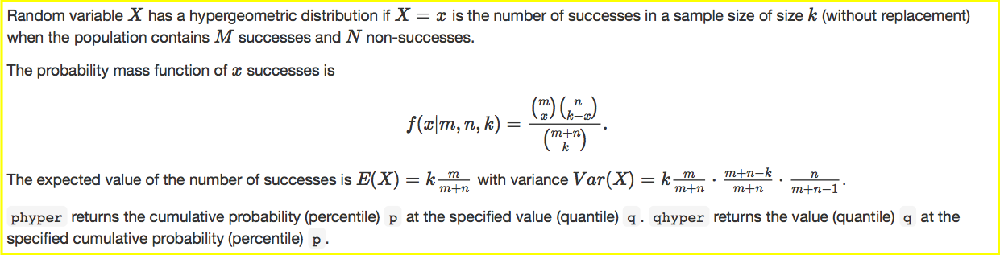
Örnek: İçinde 10 sağlam ve 4 arızalı ürün bulunan bir kümeden 5 ürün alınmıştır. Bu ürünlerin
a) 3 adetinin sağlam olma olasılığı nedir?
## [1] 0.3596404b) En fazla 2’sinin sağlam olma olasılığı nedir?
# P(X<=2)=P(X=0)+P(X=1)+P(X=2)
tot=numeric() # bos vektor
for(i in 0:2){
tot[i+1]=dhyper(x = i, m = 10, n = 4, k = 5)}
b<-sum(tot); b## [1] 0.09490509c) En az üçünün sağlam olma olasılığı nedir?
## [1] 0.9050949Örnek: Bir tekstil fabrikasında üretilmiş 1000 tişörtün 200’ünün kusurlu olduğu biliniyor. Perakende satış yapan bir mağaza sahibi 25 tişörtü rasgele seçerek alırken kusurlu tişört sayısı 4’den çok çıkarsa malı iade edeceğini söylüyor. Malı iade etme olasılığı nedir?
# P(X>4)=1-P(X<=4)
z=numeric() # bos vektor
for(i in 0:4){
z[i+1]=dhyper(x = i, m = 200, n = 800, k = 25)}
sum<-sum(z);
iade=1-sum; iade## [1] 0.58131516.3.2 Binom Dağılımı
Sadece iki sonuç veren bir Bernoulli deneyinin n kez birbirinden bağımsız ve aynı koşullar altında tekrar ettiği biliniyorsa ve sıra gözetilmeden başarı türünden oluşan sonuçlarla ilgileniliyorsa bu dağılıma binom dağılımı denir. Binom dağılımı n (örnek büyüklüğü) ve p (hatalı/hatasız olasılığı) olmak üzere iki parametreye sahiptir.

Örnek: Bir fabrikada üretim yapan vardiyalardan birinin ürettiği ürünlerin %10 olasılıkla kusurlu olduğu tespit edilmiştir. Bu ürünlerden rasgele 5 adet alındığında,
a) 1 adedinin kusurlu olma olasılığı nedir?
## [1] 0.32805b) En fazla 1 adedinin kusurlu olma olasılığı nedir?
# P(X<=1)=P(X=0)+P(X=1)
kusur=numeric() # bos vektor
for(k in 0:1){
kusur[k+1]=dbinom(x=k, size=5, prob=0.10)}
sum(kusur)## [1] 0.91854c) En az 2 adedinin kusurlu olma olasılığı nedir?
## [1] 0.08146Örnek: Bir firma %5 kusurlu ürün içeren büyük bir parti maldan rasgele 120 adet seçiyor. Y bu 120 üründeki kusurluların sayısı olsun. Firma kusurlu parçaları tamir için geri gönderecektir. Tamirin maliyeti;
\(M=8Y^{2}+0.5Y-10\)
fonksiyonu ile hesaplanmaktadır. Tamirin beklenen maliyeti nedir?
# E(M)=8E(Y^2)+0.5E(Y)-E(10)
# E(Y)=np
#Var(Y)= npq= E(Y^2)-E(Y)^2
ey=120*0.05
eykare=120*0.05*0.95+(ey^2)
em=8*eykare+0.5*ey-10; em## [1] 326.66.3.3 Poisson Dağılımı
Poisson dağılımı belirli aralıkta gerçekleşme olasılığı çok küçük olan durumlarda kullanılır. Dağılımın tek parametresi \(\lambda\) olup gerçekleşen ortalama olay sayısında eşittir. Poisson dağılımı istatistiksel kalite kontrolde ürünün bir biriminde oluşan uygunsuzlukların ya da kusur sayısının belirlenmesinde kullanılan bir dağılımdır. Zaman birimi başına gözlemleri içeren birçok durumda bu dağılım uygulanabilir.
\(\lambda=np\)
Poisson dağılımı, kabul örneklemesi ve ölçülemeyen özellikler için kontrol diyagramlarında bir temel oluşturmaktadır.
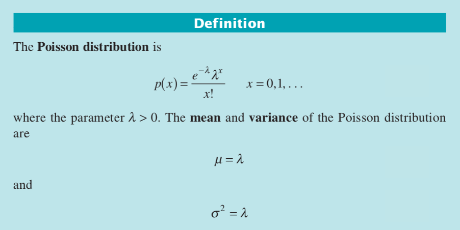
Örnek: Bir fabrikada üretilen ürünler 0.004 olasılıkla kusurludur. Üretilen bu ürünlerden rassal örnekleme ile 1000 adet alınmıştır.
a) 3 adet ürünün kusurlu olma olasılığı nedir?
## [1] 0.1953668b) 3 adetten daha az ürünün kusurlu olma olasılığı nedir?
# P(X<3)=P(X=0)+P(X=1)+P(X=2)
kusurlu=numeric() # bos vektor
for(t in 0:2){
kusurlu[t+1]=dpois(x = t, lambda = 1000*0.004)}
sum(kusurlu)## [1] 0.2381033c) En az 2 ürünün kusurlu olması olasılıklarını hesaplayınız.
## [1] 0.01831564 0.07326256 0.14652511## [1] 0.9084218Örnek: Bir büyük alışveriş merkezinde yürüyen merdivenlerin yılda ortalama 3 gün arızalandığı saptanmıştır.
a) Herhangi bir ay içinde merdivenlerin hiç arızalanmama olasılığı nedir?
## [1] 0.2465753## [1] 0.7814725b) Herhangi bir ay içinde merdivenlerin 2’den az arızalanma olasılığı nedir?
## [1] 0.9741643c) Bir sonraki yıl merdivenlerin hiç arızalanmama olasılığı nedir?
## [1] 0.04978707Ödev: Bir fabrikanın deposundaki stoktan 365 gün içinde 36 ton mal çekilmiştir. Bu dönem içinde rasgele saptanan bir 15 günlük dilimde en az 3 ton mal çekilme olasılığı nedir?
6.4 Önemli Sürekli Olasılık Dağılımları
6.4.1 Normal Dağılım

İstatistiksel proses kontrol uygulamalarında kullanılan sayısal hesaplamaların önemli bir bölümü verinin normal dağılıma uyduğu kabulüne göre yapılmaktadır.
Gauss dağılımı olarak da bilinen normal dağılım aşağıdaki temel özelliklere sahiptir.
- Simetriktir, çan eğrisi şeklindedir.
- Veriler ortalama etrafında yoğunlaşmıştır. Eğri altındaki alan tüm olasılıklar toplamına eşit yani 1’dir.
- Dağılımın tek bir zirvesi vardır, ortalama, mod ve medyan değeri aynıdır.
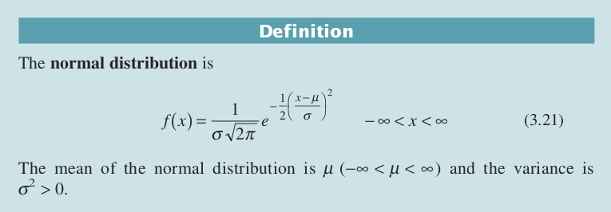
Popülasyon değerlerinin %68.26’sının ortalama artı ve eksi bir standart sapma (\(\mu\) ± 1\(\sigma\)) ile tanımlanan sınırlar arasında kalır, değerlerin %95.46’sı ortalama artı ve eksi iki standart sapma (\(\mu\) ± 2\(\sigma\)) ile tanımlanan sınırlar arasında kalır; ve popülasyon değerlerinin %99.73’ü ortalama artı ve eksi üç standart sapma (\(\mu\) ± 3\(\sigma\)) ile tanımlanan sınırlar dahilindedir.

Ortalaması ve standart sapması bilinen bir popülasyona ait normal dağılım olasılıklarını hesaplayabilmek için standart normal dağılım tablosu kullanılmaktadır. Standart normal dağılım; Z\(\sim\)N(0,1) şeklinde ifade edilmektedir. Bir X değişkeni aşağıdaki eşitlik yardımı ile Z standart normal değerine dönüştürülür ve bu sayede standart normal dağılım tablosu kullanılabilir.
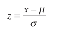

## [1] 0.00 0.01 0.02 0.03 0.04 0.05## [1] 0.5000000 0.5039894 0.5079783 0.5119665 0.5159534 0.5199388## [,1] [,2] [,3] [,4] [,5] [,6] [,7]
## [1,] 0.5000000 0.5039894 0.5079783 0.5119665 0.5159534 0.5199388 0.5239222
## [2,] 0.5398278 0.5437953 0.5477584 0.5517168 0.5556700 0.5596177 0.5635595
## [3,] 0.5792597 0.5831662 0.5870644 0.5909541 0.5948349 0.5987063 0.6025681
## [4,] 0.6179114 0.6217195 0.6255158 0.6293000 0.6330717 0.6368307 0.6405764
## [5,] 0.6554217 0.6590970 0.6627573 0.6664022 0.6700314 0.6736448 0.6772419
## [6,] 0.6914625 0.6949743 0.6984682 0.7019440 0.7054015 0.7088403 0.7122603
## [7,] 0.7257469 0.7290691 0.7323711 0.7356527 0.7389137 0.7421539 0.7453731
## [8,] 0.7580363 0.7611479 0.7642375 0.7673049 0.7703500 0.7733726 0.7763727
## [9,] 0.7881446 0.7910299 0.7938919 0.7967306 0.7995458 0.8023375 0.8051055
## [10,] 0.8159399 0.8185887 0.8212136 0.8238145 0.8263912 0.8289439 0.8314724
## [11,] 0.8413447 0.8437524 0.8461358 0.8484950 0.8508300 0.8531409 0.8554277
## [12,] 0.8643339 0.8665005 0.8686431 0.8707619 0.8728568 0.8749281 0.8769756
## [13,] 0.8849303 0.8868606 0.8887676 0.8906514 0.8925123 0.8943502 0.8961653
## [14,] 0.9031995 0.9049021 0.9065825 0.9082409 0.9098773 0.9114920 0.9130850
## [15,] 0.9192433 0.9207302 0.9221962 0.9236415 0.9250663 0.9264707 0.9278550
## [16,] 0.9331928 0.9344783 0.9357445 0.9369916 0.9382198 0.9394292 0.9406201
## [17,] 0.9452007 0.9463011 0.9473839 0.9484493 0.9494974 0.9505285 0.9515428
## [18,] 0.9554345 0.9563671 0.9572838 0.9581849 0.9590705 0.9599408 0.9607961
## [19,] 0.9640697 0.9648521 0.9656205 0.9663750 0.9671159 0.9678432 0.9685572
## [20,] 0.9712834 0.9719334 0.9725711 0.9731966 0.9738102 0.9744119 0.9750021
## [21,] 0.9772499 0.9777844 0.9783083 0.9788217 0.9793248 0.9798178 0.9803007
## [22,] 0.9821356 0.9825708 0.9829970 0.9834142 0.9838226 0.9842224 0.9846137
## [23,] 0.9860966 0.9864474 0.9867906 0.9871263 0.9874545 0.9877755 0.9880894
## [24,] 0.9892759 0.9895559 0.9898296 0.9900969 0.9903581 0.9906133 0.9908625
## [25,] 0.9918025 0.9920237 0.9922397 0.9924506 0.9926564 0.9928572 0.9930531
## [26,] 0.9937903 0.9939634 0.9941323 0.9942969 0.9944574 0.9946139 0.9947664
## [27,] 0.9953388 0.9954729 0.9956035 0.9957308 0.9958547 0.9959754 0.9960930
## [28,] 0.9965330 0.9966358 0.9967359 0.9968333 0.9969280 0.9970202 0.9971099
## [29,] 0.9974449 0.9975229 0.9975988 0.9976726 0.9977443 0.9978140 0.9978818
## [30,] 0.9981342 0.9981929 0.9982498 0.9983052 0.9983589 0.9984111 0.9984618
## [31,] 0.9986501 0.9986938 0.9987361 0.9987772 0.9988171 0.9988558 0.9988933
## [,8] [,9] [,10]
## [1,] 0.5279032 0.5318814 0.5358564
## [2,] 0.5674949 0.5714237 0.5753454
## [3,] 0.6064199 0.6102612 0.6140919
## [4,] 0.6443088 0.6480273 0.6517317
## [5,] 0.6808225 0.6843863 0.6879331
## [6,] 0.7156612 0.7190427 0.7224047
## [7,] 0.7485711 0.7517478 0.7549029
## [8,] 0.7793501 0.7823046 0.7852361
## [9,] 0.8078498 0.8105703 0.8132671
## [10,] 0.8339768 0.8364569 0.8389129
## [11,] 0.8576903 0.8599289 0.8621434
## [12,] 0.8789995 0.8809999 0.8829768
## [13,] 0.8979577 0.8997274 0.9014747
## [14,] 0.9146565 0.9162067 0.9177356
## [15,] 0.9292191 0.9305634 0.9318879
## [16,] 0.9417924 0.9429466 0.9440826
## [17,] 0.9525403 0.9535213 0.9544860
## [18,] 0.9616364 0.9624620 0.9632730
## [19,] 0.9692581 0.9699460 0.9706210
## [20,] 0.9755808 0.9761482 0.9767045
## [21,] 0.9807738 0.9812372 0.9816911
## [22,] 0.9849966 0.9853713 0.9857379
## [23,] 0.9883962 0.9886962 0.9889893
## [24,] 0.9911060 0.9913437 0.9915758
## [25,] 0.9932443 0.9934309 0.9936128
## [26,] 0.9949151 0.9950600 0.9952012
## [27,] 0.9962074 0.9963189 0.9964274
## [28,] 0.9971972 0.9972821 0.9973646
## [29,] 0.9979476 0.9980116 0.9980738
## [30,] 0.9985110 0.9985588 0.9986051
## [31,] 0.9989297 0.9989650 0.9989992## 0 0.01 0.02 0.03 0.04 0.05 0.06 0.07 0.08 0.09
## 0 0.5000 0.5040 0.5080 0.5120 0.5160 0.5199 0.5239 0.5279 0.5319 0.5359
## 0.1 0.5398 0.5438 0.5478 0.5517 0.5557 0.5596 0.5636 0.5675 0.5714 0.5753
## 0.2 0.5793 0.5832 0.5871 0.5910 0.5948 0.5987 0.6026 0.6064 0.6103 0.6141
## 0.3 0.6179 0.6217 0.6255 0.6293 0.6331 0.6368 0.6406 0.6443 0.6480 0.6517
## 0.4 0.6554 0.6591 0.6628 0.6664 0.6700 0.6736 0.6772 0.6808 0.6844 0.6879
## 0.5 0.6915 0.6950 0.6985 0.7019 0.7054 0.7088 0.7123 0.7157 0.7190 0.7224
## 0.6 0.7257 0.7291 0.7324 0.7357 0.7389 0.7422 0.7454 0.7486 0.7517 0.7549
## 0.7 0.7580 0.7611 0.7642 0.7673 0.7704 0.7734 0.7764 0.7794 0.7823 0.7852
## 0.8 0.7881 0.7910 0.7939 0.7967 0.7995 0.8023 0.8051 0.8078 0.8106 0.8133
## 0.9 0.8159 0.8186 0.8212 0.8238 0.8264 0.8289 0.8315 0.8340 0.8365 0.8389
## 1 0.8413 0.8438 0.8461 0.8485 0.8508 0.8531 0.8554 0.8577 0.8599 0.8621
## 1.1 0.8643 0.8665 0.8686 0.8708 0.8729 0.8749 0.8770 0.8790 0.8810 0.8830
## 1.2 0.8849 0.8869 0.8888 0.8907 0.8925 0.8944 0.8962 0.8980 0.8997 0.9015
## 1.3 0.9032 0.9049 0.9066 0.9082 0.9099 0.9115 0.9131 0.9147 0.9162 0.9177
## 1.4 0.9192 0.9207 0.9222 0.9236 0.9251 0.9265 0.9279 0.9292 0.9306 0.9319
## 1.5 0.9332 0.9345 0.9357 0.9370 0.9382 0.9394 0.9406 0.9418 0.9429 0.9441
## 1.6 0.9452 0.9463 0.9474 0.9484 0.9495 0.9505 0.9515 0.9525 0.9535 0.9545
## 1.7 0.9554 0.9564 0.9573 0.9582 0.9591 0.9599 0.9608 0.9616 0.9625 0.9633
## 1.8 0.9641 0.9649 0.9656 0.9664 0.9671 0.9678 0.9686 0.9693 0.9699 0.9706
## 1.9 0.9713 0.9719 0.9726 0.9732 0.9738 0.9744 0.9750 0.9756 0.9761 0.9767
## 2 0.9772 0.9778 0.9783 0.9788 0.9793 0.9798 0.9803 0.9808 0.9812 0.9817
## 2.1 0.9821 0.9826 0.9830 0.9834 0.9838 0.9842 0.9846 0.9850 0.9854 0.9857
## 2.2 0.9861 0.9864 0.9868 0.9871 0.9875 0.9878 0.9881 0.9884 0.9887 0.9890
## 2.3 0.9893 0.9896 0.9898 0.9901 0.9904 0.9906 0.9909 0.9911 0.9913 0.9916
## 2.4 0.9918 0.9920 0.9922 0.9925 0.9927 0.9929 0.9931 0.9932 0.9934 0.9936
## 2.5 0.9938 0.9940 0.9941 0.9943 0.9945 0.9946 0.9948 0.9949 0.9951 0.9952
## 2.6 0.9953 0.9955 0.9956 0.9957 0.9959 0.9960 0.9961 0.9962 0.9963 0.9964
## 2.7 0.9965 0.9966 0.9967 0.9968 0.9969 0.9970 0.9971 0.9972 0.9973 0.9974
## 2.8 0.9974 0.9975 0.9976 0.9977 0.9977 0.9978 0.9979 0.9979 0.9980 0.9981
## 2.9 0.9981 0.9982 0.9982 0.9983 0.9984 0.9984 0.9985 0.9985 0.9986 0.9986
## 3 0.9987 0.9987 0.9987 0.9988 0.9988 0.9989 0.9989 0.9989 0.9990 0.9990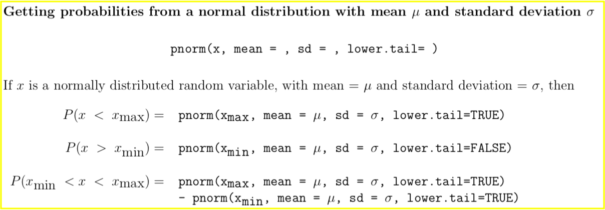
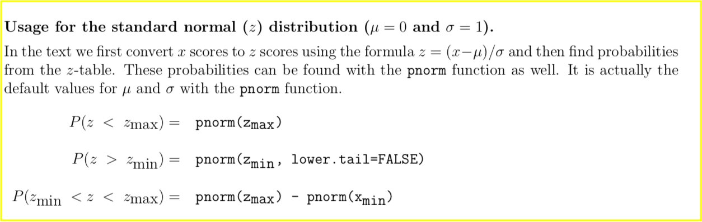
Örnek: Bir işletme tarafından üretilen belirli bir mısır gevreğinin geçtiğimiz yıl için ortalama ağırlığı 0.297 kg ve standart sapması 0.024 kg’dır. Normal dağılım varsayımı ile, alt spesifikasyon limiti olan 0.274 kg’dan daha az üretim yapılma olasılığını bulunuz. (Ortalama ve standart sapma geçtiğimiz yıl boyunca yapılan yüksek sayıdaki testten elde ediliği için bu değerler popülasyon değerlerinin tahmini olarak düşünülmelidir.)
- pnorm fonksiyonu varyans değil standart sapma kullanılıyor!
# P(X<0.274)
# Z=(0.274-0.297)/0.024=-0.96
# Z_0.96=0.8315 tablo degeri
# P(Z<-0.96)=P(Z>0.96)= 1-0.8315=0.1685
urt<-pnorm(0.274,mean=0.297,sd=0.024, lower.tail = TRUE); urt## [1] 0.1689Örnek: Bir fabrikada üretilen ürünlerin ortalama ağırlıkları 50 kg ve ağırlıkları dağılımının varyansı 49 kg olarak bulunmuştur. Ağırlıkların dağılımı normaldir. Bu ürünlerden 5000 adet alınmıştır. Bu 5000 üründen kaç adetinin
a) 48 ile 51 kg arasında olacağını hesaplayınız.
# P(48<X<51)= P(X<51)-P(X<48)
a<-pnorm(51,50,7, lower.tail = TRUE) # varyans 49 kg
b<-pnorm(48,50,7, lower.tail = TRUE)
c<-a-b## [1] 846.3b) 52 kg’den fazla olacağını hesaplayınız.
## [1] 0.3875## [1] 1938Örnek: Büyük bir firmanın pazarlama elemanlarının aylık satış hasılasına göre dağılımı normal olup ortalaması 200 bin TL ve varyansı da 2500 olarak bilinmektedir. Firma yönetimi çok satış yapan ilk %10’a giren elemanlarına prim verecektir. Prim kazanabilmek için satış hasılası en az kaç olmalıdır?
# P(X>x)=0.10
emt=numeric()
for(i in 200:300)
emt[i]=pnorm(i,200,50, lower.tail = FALSE)
emt<-round(emt,3);emt## [1] NA NA NA NA NA NA NA NA NA NA NA NA
## [13] NA NA NA NA NA NA NA NA NA NA NA NA
## [25] NA NA NA NA NA NA NA NA NA NA NA NA
## [37] NA NA NA NA NA NA NA NA NA NA NA NA
## [49] NA NA NA NA NA NA NA NA NA NA NA NA
## [61] NA NA NA NA NA NA NA NA NA NA NA NA
## [73] NA NA NA NA NA NA NA NA NA NA NA NA
## [85] NA NA NA NA NA NA NA NA NA NA NA NA
## [97] NA NA NA NA NA NA NA NA NA NA NA NA
## [109] NA NA NA NA NA NA NA NA NA NA NA NA
## [121] NA NA NA NA NA NA NA NA NA NA NA NA
## [133] NA NA NA NA NA NA NA NA NA NA NA NA
## [145] NA NA NA NA NA NA NA NA NA NA NA NA
## [157] NA NA NA NA NA NA NA NA NA NA NA NA
## [169] NA NA NA NA NA NA NA NA NA NA NA NA
## [181] NA NA NA NA NA NA NA NA NA NA NA NA
## [193] NA NA NA NA NA NA NA 0.500 0.492 0.484 0.476 0.468
## [205] 0.460 0.452 0.444 0.436 0.429 0.421 0.413 0.405 0.397 0.390 0.382 0.374
## [217] 0.367 0.359 0.352 0.345 0.337 0.330 0.323 0.316 0.309 0.302 0.295 0.288
## [229] 0.281 0.274 0.268 0.261 0.255 0.248 0.242 0.236 0.230 0.224 0.218 0.212
## [241] 0.206 0.200 0.195 0.189 0.184 0.179 0.174 0.169 0.164 0.159 0.154 0.149
## [253] 0.145 0.140 0.136 0.131 0.127 0.123 0.119 0.115 0.111 0.107 0.104 0.100
## [265] 0.097 0.093 0.090 0.087 0.084 0.081 0.078 0.075 0.072 0.069 0.067 0.064
## [277] 0.062 0.059 0.057 0.055 0.053 0.051 0.048 0.046 0.045 0.043 0.041 0.039
## [289] 0.038 0.036 0.034 0.033 0.031 0.030 0.029 0.027 0.026 0.025 0.024 0.023## [1] 2646.4.2 Üstel Dağılım
Üstel dağılım adını olasılık yoğunluk fonksiyonundaki üstel fonksiyondan alır. Üstel dağılım belirli bir olayın ortaya çıkmasına kadar geçen süre olarak ortaya tanımlanır.
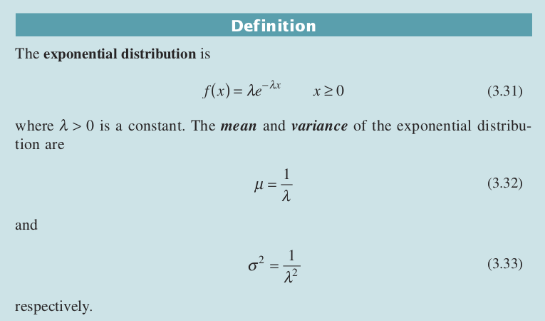
Örnek: Bir elektronik hesap makinesi üreticisi ürün garanti süresini bir yıl olarak belirlemiştir. Hesap makinesi bu süre içinde herhangi bir nedenle arızalanırsa, değiştirilir. Arıza zamanı, aşağıdaki olasılık dağılımı ile modellenmiştir:
\(f(x)=0.125e^{-0.125x}\), \(x>0\)
Hesap makinelerinin yüzde kaçı garanti süresi içinde arızalanır?
## [1] 11.756.4.3 Gamma Dağılımı
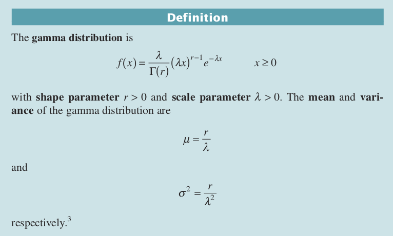
Olasılık ve istatistikte çok karşılaşılan dağılımların bazıları (Üstel ve Ki-Kare gibi) Gamma dağılımının özel halidir.
\(\Gamma(k+1)=k!\)
\(X\sim Gamma(r,\lambda)\) olsun, \(r=1\) için \(X\) rasgele değişkeni üstel dağılıma sahiptir.
\(X\sim Gamma(r,\lambda)\) olsun, \(r=p/2\) ve \(\lambda=2\) için \(X\) rasgele değişkeni serbestlik derecesi \(p\) olan ki-kare dağılımına sahiptir.
6.5 Olasılık Grafikleri
Belirli bir olasılık dağılımının, veriler için makul bir model olup olmadığını nasıl anlarız? Olasılık grafikleri, verilerin öznel bir görsel incelemesine dayalı olarak örnek verilerin varsayılmış bir dağılıma uygun olup olmadığını belirlemek için kullanılan bir yöntemdir.
Grafik çizimi için öncelikle veriler küçükten büyüğe doğru sıralanır, ardından sıra numaralarına göre \((j-0.5)/n\) (gözlenen kümülatif sıklık) değeri elde edilir ve gözleme karşılık gelen sıralama değeri \(X\) ve \(Y\) eksenlerine çizilir.
Varsayılan dağılım verileri yeterince açıklarsa, çizilen noktalar yaklaşık olarak düz bir çizgi boyunca düşecektir; çizilen noktalar düz bir çizgiden önemli ve sistematik olarak saparsa, hipotez edilen model uygun değildir. Genellikle, veri grafiğinin düz bir çizgi olarak olup olmadığının belirlenmesi özneldir.
Bu nedenle goodness-of-fit testlerini kullanmak daha güvenilir ve subjektif sonuçlar elde edilmesini sağlar.
## [1] 86.0 87.0 87.2 87.4 87.8 88.2 88.9 89.6 89.7 90.0Diğer dağılımlar için detaylı bilgi


6.6 Bazı Faydalı Yaklaşımlar
6.6.1 Binom - Hipergeometrik
Hipergeometrik dağılım \(n\rightarrow\infty\) iken Binom dağılımına yaklaşır. Bazen sonlu elemanlı bir kitleden iadesiz çekiliş yapılmak istenebilir. Bir deneyin sadece iki sonucu varsa (sarı ve lacivert topların bulunduğu bir kavanozdan aynı anda ya da iadesiz çekiliş yapılması), çekilen örnek sayısı sabit ve denemeler bağımlı (deneylerde birinin sonucu diğerini etkiliyorsa) ise böyle durumlarda Hipergeometrik dağılım kullanılır.
6.6.2 Binom - Poisson
\(X\sim Binom(n,p)\) ve \(Y\sim Poisson(\mu)\) olmak üzere, \(n\) yeterince büyük olduğu durumda binom dağılımına poisson dağılımı olarak yaklaşılabilir.
Yaklaşım büyük \(n\) değeri ve küçük \(p\) değeri için uygundur (genellikle p <0.1). \(n\)’nin değeri ne kadar büyük ve \(p\)’nin değeri ne kadar küçükse, yaklaşım o kadar iyi çalışmaktadır.
Binom dağılımı ile Poisson dağılımı arasında bir benzerlik kurulabilir. Örneğin, belirli bir saat dilimi içinde bir mağazaya giren müşterilerin sayısı Poisson rasgele değişkenidir. Oysa, mağazaya giren (maksimum müşteri sayısı sabit) her müşteriyi başarı olarak değerlendirirsek, mağazaya giren müşterilerin sayısı Binom dağılımına sahip olur.
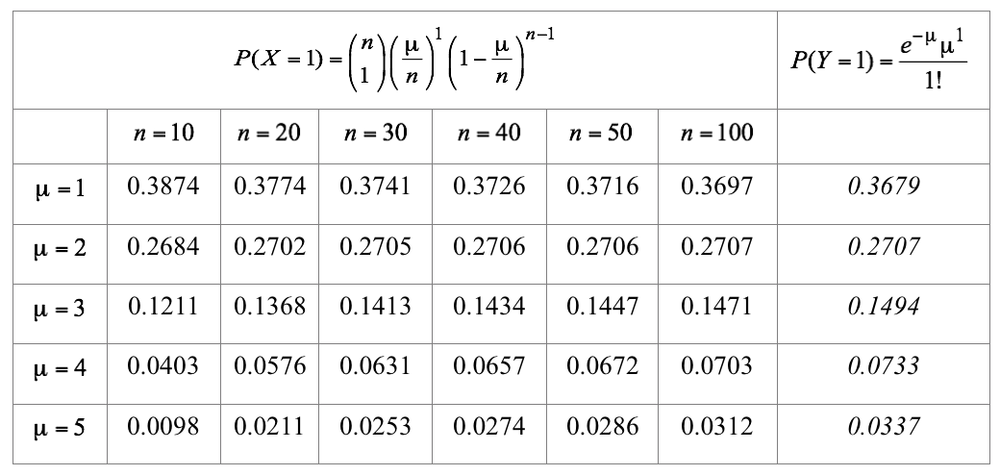
Yukarıda, değişik \(\mu\) değerleri için \(Y\sim Poisson(\mu)\) ve \(X\sim Binom(n,p)\) olmak üzere, \(p=\mu/n\) alınarak \(P(X=1)\) ve \(P(Y=1)\) olasılıkları hesaplanarak (değerler dördüncü basamaktan sonra yuvarlatılmıştır) tablo halinde verilmiştir. Tablodaki değerlerden de görüldüğü gibi, \(n\) değeri büyüdükçe, \(P(X=1)\) Binom olasılıkları \(P(Y=1)\) olasılıklarına yaklaşmaktadır.
6.6.3 Normal - Binom
\(p\) çok küçük değilse ve \(n\) de büyükse binom dağılımdan yararlanarak olasılıkları hesaplamak güçleşir. \(n\rightarrow \infty\) iken binom olasılıkları normal dağılıma yaklaştırılabilir. Bu dağılımın ortalaması ve varyansı, binom dağılımından
\(\mu=E(X)=np\)
\(\sigma^{2}=Var(X)=npq\)
olarak hesaplanır. Bu durumda \(X\sim N(np,npq)\) olur. Bu nedenle \(p\) çok küçük değilse ve \(n\) de büyükse binom dağılımına sahip \(X\) değişkeninin belli bir değerden küçük ya da büyük olması veya herhangi iki değer arasında yer alma olasılıkları standart normal dağılım tablosu kullanılarak hesaplanabilir. Fakat Binom dağılımı kesikli ve normal dağılım sürekli olduğundan standart normale dönüştürme yapılırken düzeltme işlemi yapılması gerekir. Bu düzeltme işlemi \(\pm0.5\) değeri kullanılarak yapılır.

Örnek: Bir firmanın ürünleri için yapılan müşteri memnuniyeti araştırması sonuçlarına göre müşterilerin 0.60’ı memnun olduklarını beyan etmişlerdir. Bu firmanın müşterilerinden rasgele 100 müşteri seçildiğinde en az 50 sinin memnuniyet beyan etme olasılıkları kaçtır?
## [1] 60## [1] 24## [1] 0.9846.7 Pareto Analizi
Pareto analizi, kalite iyileştirme çalışmalarında en çok kullanılan tekniklerden biri olup, verileri önem veya öncelik sırasına göre düzenlemeye dayanan bir tekniktir.
Vilfredo Pareto tarafından ortaya koyulan yöntem, 80/20 kuralı olarak da bilinmektedir. Prensip bulunduğunda, İtalya’daki toprağın %80’ine popülasyonun %20’si sahiptir. Daha sonra, pareto prensibinin hayatın diğer alanlarında da geçerli olduğu keşfedilmiştir. Bu bakımdan pareto analizi için aşağıdaki örnekler verilebilir.
- Proses hatalarının %80’i, proses problemlerinin %20’sinden dolayı oluşur.
- Şirket gelirinin %80’i, satış elemanlarının %20’si tarafından üretilir.
- Çizelgelemedeki gecikmelerin %80’i, gecikme nedenlerinin %20’sinden kaynaklanır.
- Müşteri şikayetlerinin %80’i, ürün ya da servislerin %20’sinden dolayı oluşur.
Bu örneklerde yer alan tahminler, kaba tahminlerdir. Pareto diyagramları, kalite yönetimi ile ilgili çalışmalarda, en önemli problemleri belirlemede kullanılmaktadır. Bu diyagramlar; en büyük etkiye sahip nedenler üzerine takımın odaklanmasına yardım etmekte ve basit bir görsel formatta problemlerin bağıl önemini göstermektedir.
Pareto analizine ait aşamalar aşağıdaki gibidir;
- Tüm hata unsurlarının listelenmesi
- Hata unsurlarının miktarlarının (sıklık ve/veya maliyet) belirlenmesi
- Hata unsurlarının çoktan aza doğru sıralanması ve verinin özetlenmesi
- Kümülatif dağılımların hesaplanması
- Pareto grafiğinin çizimi
- Pareto eğrisinin çizimi
- Pareto eğrisinin yorumu
Pareto analizinde, verilerin hem en sık rastlanan hatalara göre , hem de en fazla maliyet getiren hatalara göre yapılması gereklidir. Çok sık rastlanan bir hatanın bize getireceği maddi yük (maliyet) düşük olabileceği gibi, az rastlanan bir hatanın oluşturacağı maliyet yüksek olabilir.
Örnek1
#install.packages("qcc")
library(qcc)
kusur <- c(27, 789, 9, 65, 12, 109, 30, 15, 45, 621)
names(kusur) <- c("Gürültülü", "Pahalı", "Taze değil",
"Lezzetsiz", "Pers. yetersiz",
"Uzun bekleme", "Temiz değil", "Tuzlu",
"Sunum kötü", "Porsiyon küçük" )
pareto.chart(kusur, ylab="Sıklık", # y-eksen ismi
# grafik rengi
col=heat.colors(length(kusur)),
# yüzde aralıkları
cumperc = seq(0, 100, by = 20),
# label y right
ylab2 = "Kümülatif Yüzde",
# grafik ismi
main = "Farklı Müşteri Şikayetleri"
)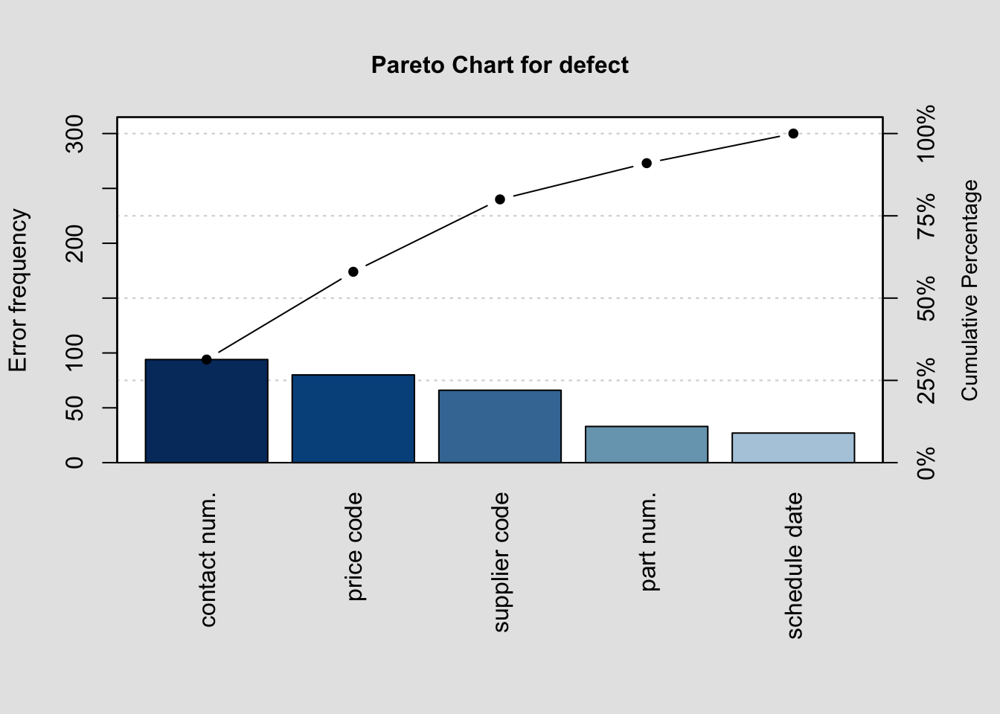
##
## Pareto chart analysis for kusur
## Frequency Cum.Freq. Percentage Cum.Percent.
## Pahalı 789.0000 789.0000 45.8188 45.8188
## Porsiyon küçük 621.0000 1410.0000 36.0627 81.8815
## Uzun bekleme 109.0000 1519.0000 6.3298 88.2114
## Lezzetsiz 65.0000 1584.0000 3.7747 91.9861
## Sunum kötü 45.0000 1629.0000 2.6132 94.5993
## Temiz değil 30.0000 1659.0000 1.7422 96.3415
## Gürültülü 27.0000 1686.0000 1.5679 97.9094
## Tuzlu 15.0000 1701.0000 0.8711 98.7805
## Pers. yetersiz 12.0000 1713.0000 0.6969 99.4774
## Taze değil 9.0000 1722.0000 0.5226 100.0000Örnek2
defect <- c(80, 27, 66, 94, 33)
names(defect) <- c("price code", "schedule date", "supplier code", "contact num.", "part num.")
pareto.chart(defect, ylab = "Error frequency")
##
## Pareto chart analysis for defect
## Frequency Cum.Freq. Percentage Cum.Percent.
## contact num. 94.00 94.00 31.33 31.33
## price code 80.00 174.00 26.67 58.00
## supplier code 66.00 240.00 22.00 80.00
## part num. 33.00 273.00 11.00 91.00
## schedule date 27.00 300.00 9.00 100.00Pareto Öncelik İndeksi (Pareto Priority Index): Hangi hatanın düzeltilmesine öncelik verilmesi gerektiğini öngörmemizi sağlayan indekstir.

Her bir hata düzeltme faaliyetini bir proje olarak planlamak gerekmektedir. Denklemdeki savings (tasarruf), bu hatayı ortadan kaldırdığımızda elde edilecek parasal tutarı, probability of success (başarı olasılığı), bu projenin başarılı olabilme şansını (0-1 aralığında), cost (proje maliyeti), bu projenin bize getireceği toplam maliyeti ve time of completion (projenin tamamlanma süresi), ay veya yıl olarak projenin ne kadar süre ile planlandığını ifade etmektedir. PPI’da en yüksek değerde olan hata unsurunun düzeltilmesi için bir çalışma başlatılması gerekmektedir.
6.8 Sebep-Sonuç (Cause and Effect) Analizi

Sebep-sonuç diyagramları Kaoru İshikawa tarafından 1943’te geliştirilmiştir. Belirli bir sorunun temel nedenini bulmak için olası nedenleri görselleştirmeye yardımcı olur. Kalite sorunlarını belirlemek, analiz etmek ve iyileştirmek amacıyla kullanılır.
Balık kılçığı (fishbone) diyagramı olarak da adlandırılan sebep-sonuç diyagramının oluşturulma adımları aşağıdaki gibi özetlenebilir;
- Kalite problemini belirle
- Önemli nedenleri belirle
- Tüm minör nedenleri belirle (beyin fırtınası)
- Diyagram tamamlandığında en olası nedenleri belirlemek için diyagramı değerlendir.
- Çözümler geliştir.
Sebep-sonuç analizinin yararları şunlardır;
- Yöntem, sorunların üzerine giden aktif bir yönetimi geliştirir.
- Diyagramın hazırlanması iletişimi güçlendirir ve herkesin dikkatinin bir noktaya toplanmasını sağlar.
- Eğitici bir çalışmadır, herkesin bilgisini geliştirir.
- Verilerin toplanmasını ve probleme bilimsel biçimde yaklaşmayı sağlar.
- Tüm sorunlara uygulanabilir.
İskeletin “başı” genellikle sağda gösterilen problemi veya etkiyi tasvir eder. Farklı nedenleri göstermek için solda “kemikler” uzanır. Kaburgalar, nedenlere ve alt nedenlere ayrılan analiz için nedenlerin kategorilerini veya sınıflandırmasını belirtir. Dallanma, her sınıflandırma altında gerekli olan seviyelere bağlıdır.

Fishbone diyagramı DMAIC sürecinin analiz aşamasında da kullanılmaktadır.

Fishbone diyagramının kullanımı ile;
- Yeni ürün dizaynında ortaya çıkabilecek problemlerin potansiyel nedenleri
- Kalite kusurlarından kaçınma yolları
- Kusura neden olabilecek potansiyel faktörler
tanımlanabilmektedir.

Örnek1:
library(SixSigma)
effect <- "Flight Time"
causes.gr <- c("Operator", "Environment", "Tools", "Design",
"Raw.Material", "Measure.Tool")
causes <- vector(mode = "list", length = length(causes.gr))
causes[1] <- list(c("operator #1", "operator #2", "operator #3"))
causes[2] <- list(c("height", "cleaning"))
causes[3] <- list(c("scissors", "tape"))
causes[4] <- list(c("rotor.length", "rotor.width2", "paperclip"))
causes[5] <- list(c("thickness", "marks"))
causes[6] <- list(c("calibrate", "model"))
ss.ceDiag(effect, causes.gr, causes, sub = "Paper Helicopter Project")
Örnek2:
b.effect <- "Delay"
b.groups <- c("Personnel", "Weather", "Suppliers", "Planning")
b.causes <- vector(mode = "list", length = length(b.groups))
b.causes[1] <- list(c("Training", "Inadequate"))
b.causes[2] <- list(c("Rain", "Temperature", "Wind"))
b.causes[3] <- list(c("Materials", "Delays", "Rework"))
b.causes[4] <- list(c("Customer", "Permissions", "Errors"))
ss.ceDiag(b.effect, b.groups, b.causes, sub = "Construction Example")
6.9 Kontrol Listeleri
Kontrol listelerinin oluşturulmasının ana amacı; proses kontrolü ve problem çözümü için işletme personeli tarafından dikkatli şekilde ve doğru olarak veri toplanmasının sağlanmasıdır. Kontrol listelerinin yapısı, her bir durum için özelleştirilir ve proje takımı tarafından tasarlanır. Yaratıcılık, bir kontrol listesinin tasarlanmasında büyük rol oynamaktadır.
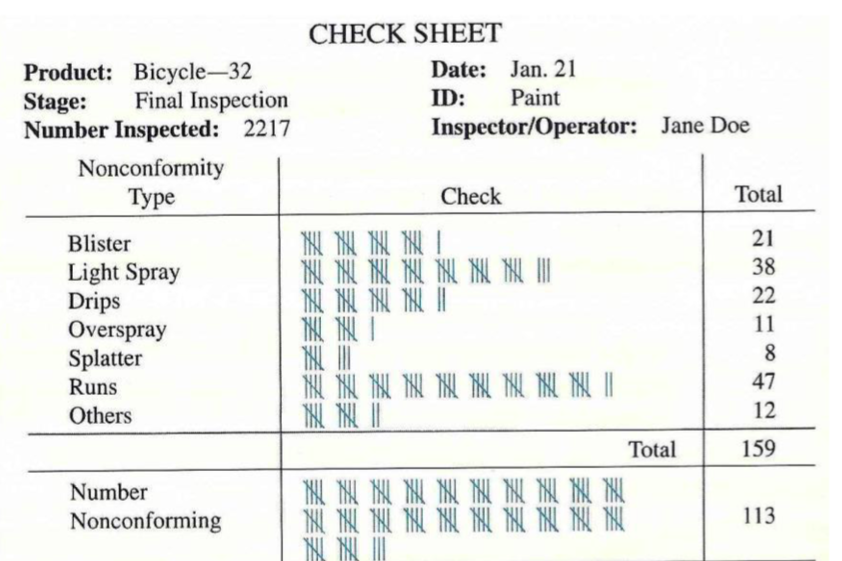
Bu kontrol listesi örneğinde, her bir kalite kusuru nedeni ve bu nedenlerin gözlenme sayıları yer almaktadır. Operatör, her üründe gözlemlediği kalite kusurunu, bu listede işaretler ve muayene işlemi tamamlandığında her bir kusur tipi için toplam sayı belirlenir. Kontrol listesinin üst kısmında ise veri toplanan ürüne ve sürece ait bilgiler ile muayeneyi gerçekleştiren operatöre ait bilgiler yer almaktadır.
Kontrol listeleri, istatistiksel kalite kontrol çalışmaları için temel veriyi sağlamaktadır. Kontrol listelerinin faydaları aşağıdaki şekilde özetlenebilir;
- Veriyi anlamada kolaylık sağlar.
- Gözlem ile oluşturulur, gerçeklerin daha net bir resmini sunmaktadır.
- Verideki desenler hızlı ve net bir şekilde gözlenebilir.
6.10 Serpilme (Scatter) Diyagramı
Serpilme diyagramı, iki değişken arasındaki ilişkinin incelenmesi için kullanılan bir grafik türüdür.
Serpilme diyagramları;
- İki değişkenin ilişkili olduğunu belirten bir hipotezi doğrulamak
- İlişkinin gücünü test etmek için görsel ve istatistiksel bilgi sağlamak
amacıyla kullanılabilir. Serpilme diyagramında iki değişken ilişkili gözlenebilir ancak bu durum değişkenlerin arasında nedensellik olduğu anlamına gelmemektedir.
## var1 var2 var3 var4 var5 var6 var7
## 1 9.55 35.12 5.28 9.60 12.23 38.85 120.5
## 2 9.95 34.92 4.91 8.46 1.20 40.13 120.1
## 3 10.50 35.00 5.13 9.41 29.54 40.57 120.2
## 4 8.75 34.97 5.10 10.06 2.82 40.10 120.5
## 5 9.98 34.35 4.63 8.70 18.46 39.64 119.7
## 6 9.12 34.74 5.01 8.82 8.00 40.44 119.86.11 Kusur Konsantrasyon Diyagramı
Kusur verileri, yeterli sayıda birim üzerinde bir kusur konsantrasyon diyagramında gösterildiğinde, modeller ortaya çıkar ve bu modellerin konumu genellikle kusurların nedenleri hakkında çok fazla bilgi içerir. Kusur konsantrasyon diyagramı DMAIC sürecinin analiz kısmında oldukça kullanışlıdır.
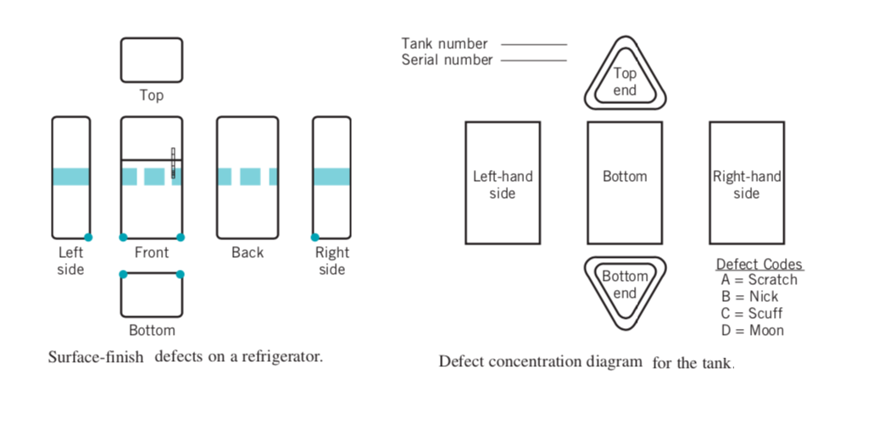
Bir buzdolabı üretim sürecinin son montaj aşaması için bir kusur konsantrasyon diyagramı görselde yer almaktadır. Yüzey bitirme kusurları, buzdolabındaki koyu gölgeli alanlarla belirlenmiştir. Diyagram incelendiğinde, bu kusurların çoğundan malzeme işlemenin sorumlu olduğu açıkça görülmektedir. Ünite, ortasına bir kayış sabitlenerek hareket ediyor ve bu kayış ya çok gevşek ya da sıkı, yıpranmış, aşındırıcı malzemeden yapılmış ya da çok dar olabilir. Ayrıca ünite hareket ettirildiğinde köşeler zarar görür. İşçi yorgunluğunun olası bir faktör olarak değerlendirilebilir. Her halükarda, uygun çalışma yöntemleri ve iyileştirilmiş malzeme kullanımı bu süreci büyük ölçüde iyileştirecektir.
Benzer şekilde tank problemi için kusur konsantrasyon diyagramı görülmektedir. Hata kategorilerinin farklı harflerle temsil edildiği açıktır.
Kaplama, boyama ve kaplama, döküm ve dökümhane işlemleri, işleme ve elektronik montaj dahil olmak üzere birçok sektörde kusur konsantrasyon diyagramlarının önemli problem çözme araçları olduğu bilinmektedir.